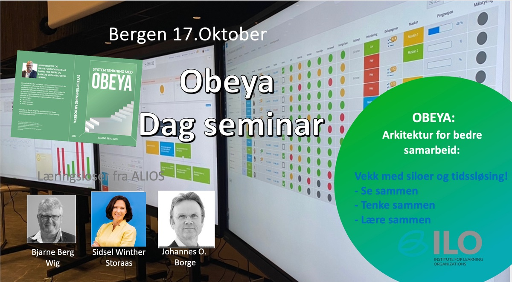

E-learning
E-learning and webinars
E-courses, e-books and webinars, available when you need them.
Learn moreE-courses, e-books and webinars, available when you need them.
Learn moreA course in systems thinking, learning culture and Obeya, run with Flowit.
Learn moreObeya – faster learning together. Ask us about the next seminar.
Learn moreObeya – faster learning together. Obeya is a visual room for collaboration between the different functions of an organisation, and an architecture for radically better collaboration across boundaries. By visualising (seeing together), reflecting and trying out solutions, we learn faster. At the seminar we learned about Obeya and shared experience between organisations.

Accelerated Learning in Organisations and Society: the annual R&D programme team meeting of ILO COEX, following up the ALIOS project.

Course programme run by Institute for Learning Organisations and Flowit, in three modules: Lean and systems thinking, learning culture and Obeya, and learning leadership. Sessions were held at Aker Tranby near Drammen, Toyota Jæger Automobil in Bergen and Flowit in Haugesund, with certificates awarded at the Lean conference in Stavanger in September 2024.
Bjarne Berg Wig presented the book Systems Thinking with Obeya at the 2023 symposium in Utrecht.
Samer Hamadeh spoke on learning culture transformation.
FlowIT and TPM Lean brukernettverket, together with Institute for Learning Organisations, invited participants on a study trip focused on systems leadership and coaching.

Samarbeidsutvikling Norge and TPM Lean brukernettverket, together with Institute for Learning Organisations, invited participants on a study trip focused on coaching and systems thinking, for everyone who wants to develop in leadership and Lean.
A new course with three sessions, 12 days in total, during 2020.
Tell us where you are today, and we will suggest the next step for your team.
or contact us directly: gabi@learnorg.global · +47 48 28 70 00